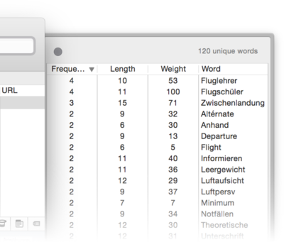

|
|
Concordance |
|
The Concordance drawer appears when you click the Concordance button in the document's navigation bar. It lists all words in that document similar to the Concordance window. Select one or multiple words (with the ⇧ and ⌘ keys pressed) in the drawer to highlight their occurences in the document.  You can sort the list in the drawer by clicking the title of the column you want to use for sorting. Click the column title again to reverse the sorting order. Double-click any word in the drawer to open the Search window with this word already filled in. To close the drawer, click the red close button. |